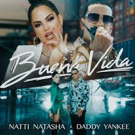

Daddy Yankee
Raymond Ayala creció en un humilde y conflictivo barrio de Río Piedras, antigua municipalidad anexionada a la capital, San Juan de Puerto Rico. No le desagradaba la escuela, pero su sueño era llegar a ser un profesional de béisbol, y sus gustos musicales eran los propios de su generación. Al entrar en la adolescencia, sin embargo, comenzó a interesarse por el break dance y particularmente por el rap, y empezó a cantar temas en este último estilo, con el que se sintió plenamente identificado.
Por esos años tuvo la ocasión de conocer a Pedro Gerardo Torruelas, un disc jockey independiente que, como la mayoría de los de su profesión, era más conocido por su nombre artístico: DJ Playero. Desde principios de los 90, esta figura clave en el desarrollo del reguetón venía produciendo grabaciones que mezclaban ritmos de reggae y de hip hop con recitaciones improvisadas en español. DJ Playero supo apreciar el potencial del joven Raymond y sus aptitudes para el rap, particularmente el ingenio que desplegaba en sus fluidas improvisaciones, y empezaron a colaborar en una serie de grabaciones que, pese su realización casi artesanal, pronto alcanzaron gran difusión entre la juventud de la isla. En la extensa discografía de DJ Playero, el álbum de mezclas Playero 34 (1990) fue el primero que acogió un tema interpretado por el joven debutante: Persígueme, no te detengas. Visite su ultimo Disco Aqui

El disco es considerado el mejor álbum de la historia del reguetón y uno de los mejores entre la música latina el que le abrió las puertas al género para el resto del mundo.53 Este álbum contó con la participación de Wisin & Yandel, Zion & Lennox, Andy Montañez, Tommy Viera, May-Be y Glory además de los mejores DJ y productores musicales del género de Reggaeton tales como Luny Tunes, Los Jedis "DJ Urba & Monserrate", DJ Nelson, Eliel, Naldo, Echo & Diesel, etc. El álbum cuenta con los géneros bien marcados de Reggaeton y Hip Hop, mientras que las demás canciones presentan el famoso sonido del reguetón, pero mezclados con Salsa, Dancehall, R&B, Merengue, etc.. Este álbum se hizo acreedor de premios Grammy Latinos, Billboard y muchos más, además de ser el álbum con más discos de platino certificados por la RIAA de la década.54 Por otro lado, su promoción fue realizada principalmente a través de varios conciertos y presentaciones en los escenarios más importantes del mundo como el Madison Square Garden Viña Del Mar 2006
Después de cosechar una gran cantidad de éxitos y reconocimientos, se ha convertido en uno de los principales y más famosos artistas latinos del ámbito mundial y en el embajador y máximo exponente de su género, muchas veces considerado el modelo a seguir en cuestión musical por sus homólogos, y su mayor inspiración ha sido Michael Jackson.83 Daddy Yankee se considera una persona humilde; prueba de esto es su comportamiento con los reporteros al estar siempre dispuesto a conceder una entrevista.84 Durante toda su carrera siempre se ha esforzado por ser el mejor ejemplo para los jóvenes, ha buscado sin falta, por medio de la música y los ritmos pegajosos, contagiar de alegría a las nuevas generaciones.En el videojuego Grand Theft Auto IV, Daddy Yankee presta su voz para la emisora San Juan Sounds donde actúa como el DJ de la estación de radio que programa reguetón; también aparece la canción IMPACTO.